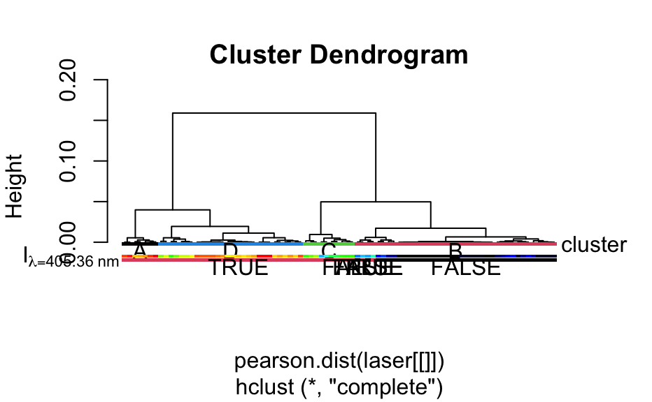

Groups are marked by colored rectangles as well as by their levels.
mark.dendrogram( dendrogram, groups, col = seq_along(unique(groups)), pos.marker = 0, height = 0.025 * max(dendrogram$height), pos.text = -2.5 * height, border = NA, text.col = "black", label, label.right = TRUE, ... )
| dendrogram | the dendrogram |
|---|---|
| groups | factor giving the the groups to mark |
| col | vector with colors for each group |
| pos.marker | top of the marker rectangle |
| height | height of the marker rectangle |
| pos.text | position of the text label |
| border | see |
| text.col | color (vector) giving the color for the text markers |
| label | side label see example |
| label.right | should the side labels be at the right side? |
| ... | handed to |
The dendrogram should be plotted separately, see the example.
Claudia Beleites
dend <- hclust(pearson.dist(laser[[]])) par(xpd = TRUE, mar = c(5.1, 4, 4, 3)) # allows plotting into the margin plot(dend, hang = -1, labels = FALSE)## mark clusters clusters <- as.factor(cutree(dend, k = 4)) levels(clusters) <- LETTERS [1:4] mark.dendrogram(dend, clusters, label = "cluster")## mark independent factor mark.dendrogram(dend, as.factor(laser [, , 405.36] > 11000), pos.marker = -0.02, pos.text = -0.03 )## mark continuous variable: convert it to a factor and omit labels mark.dendrogram(dend, cut(laser[[, , 405.36]], 100), alois.palette(100), pos.marker = -.015, text.col = NA, label = expression(I [lambda == 405.36 ~ nm]), label.right = FALSE )